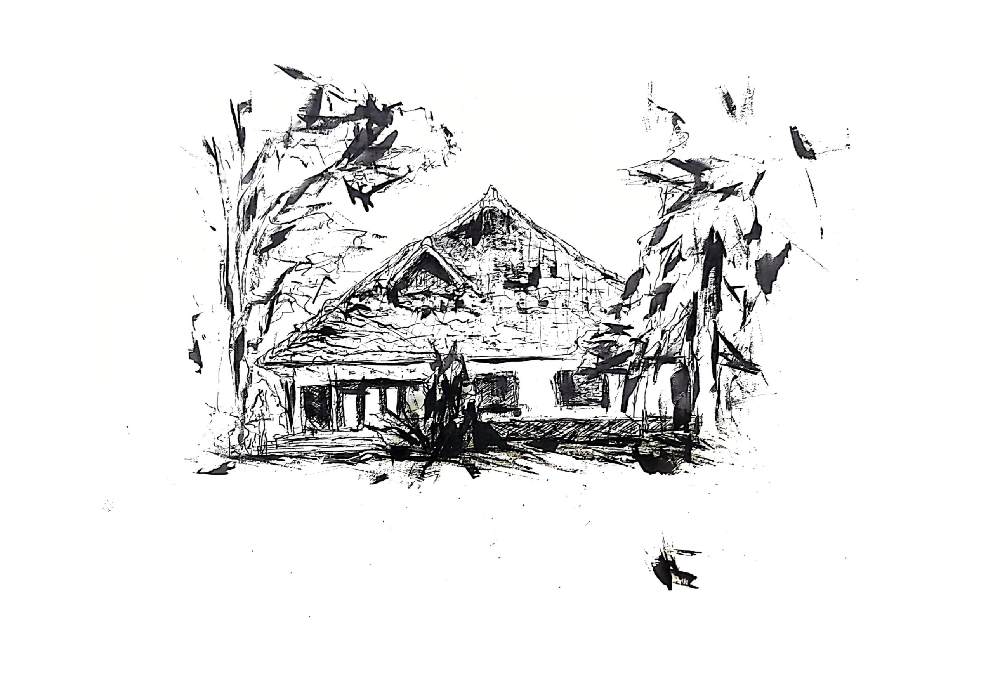
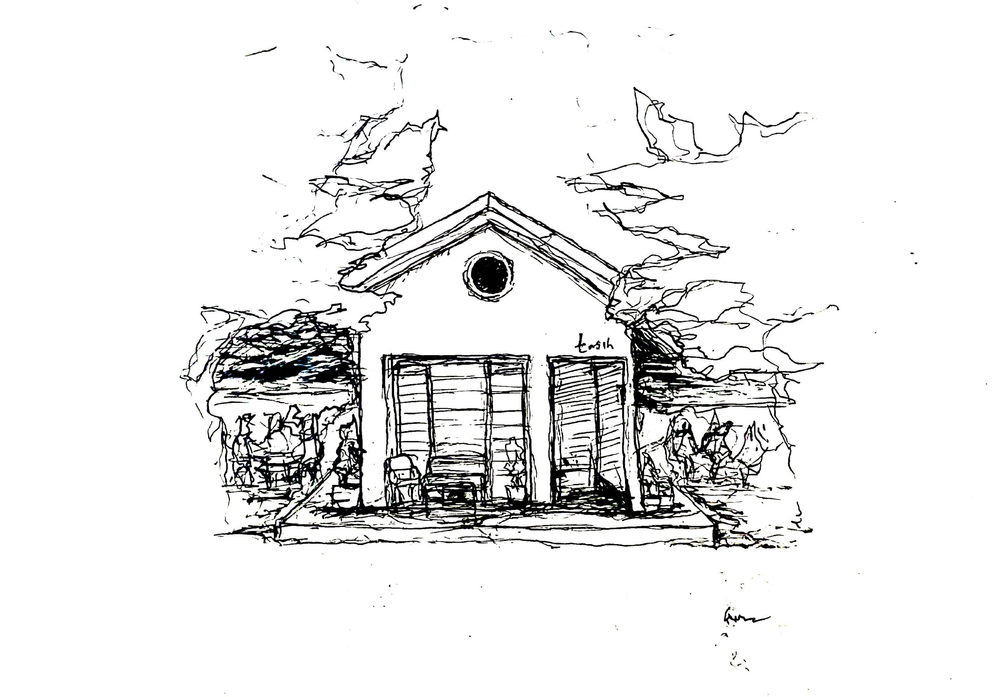
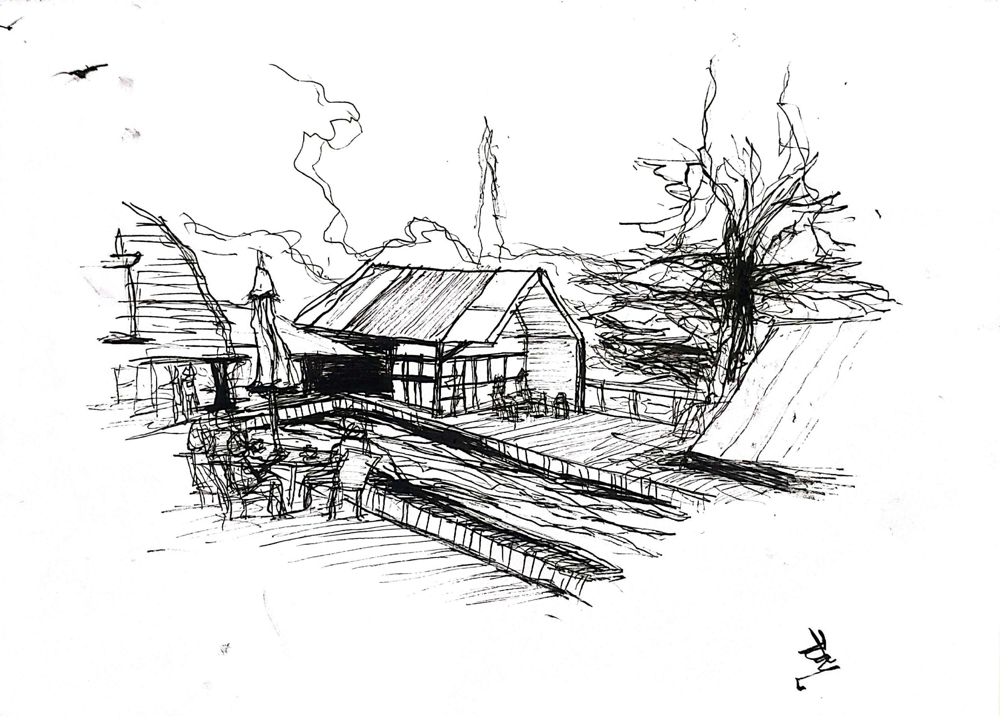
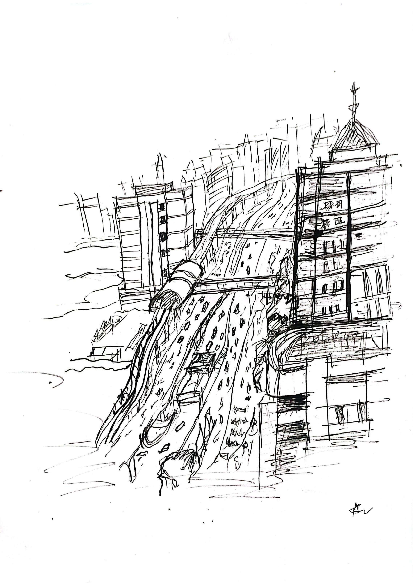
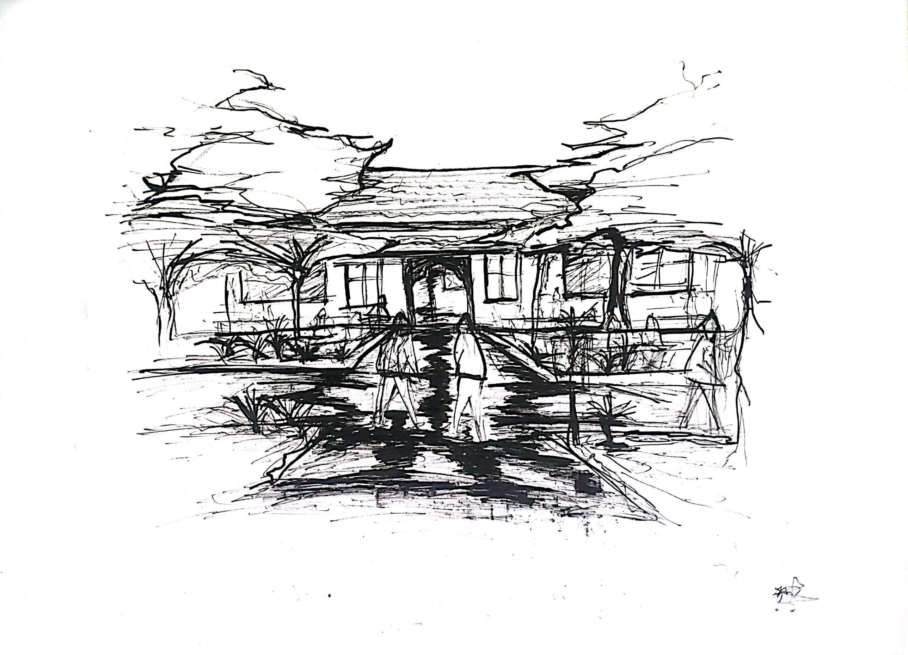
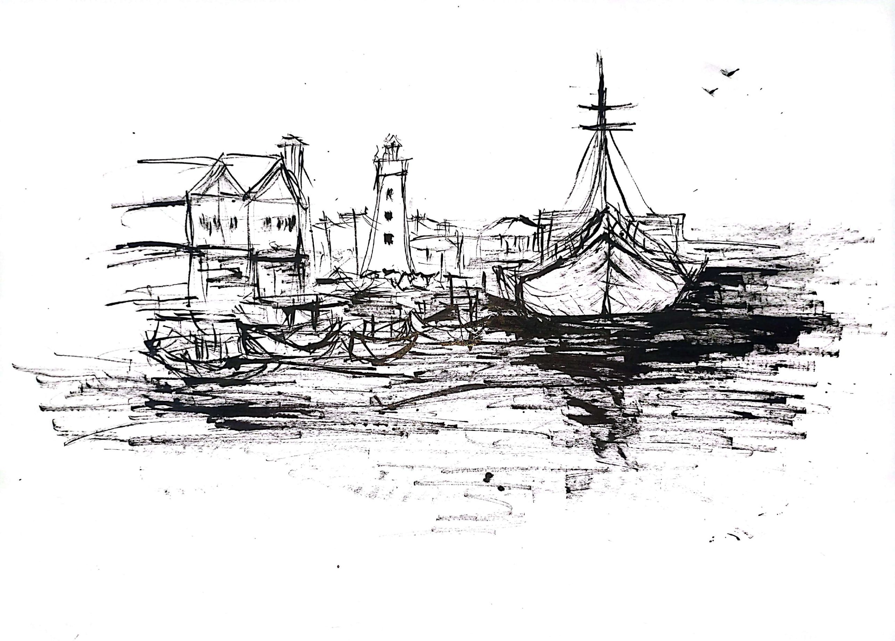

Athoya
Works
About & Contact
OpenSea ↗
Works

06
Vila Angsa: 1935 Dutch Legacy

05
Morning Lines at Tasih

04
Chilled Breezes at the Villa

03
Pancoran Pulse: Urban Arteries

02
Entrance to the Muse

01
The Merchant’s Horizon
More on OpenSea ↗